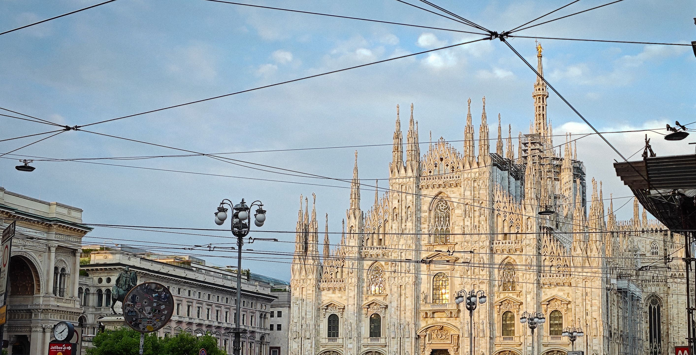
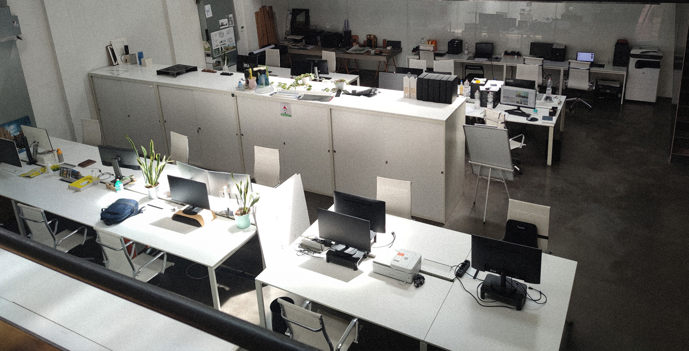
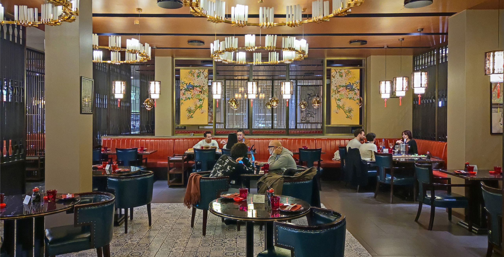
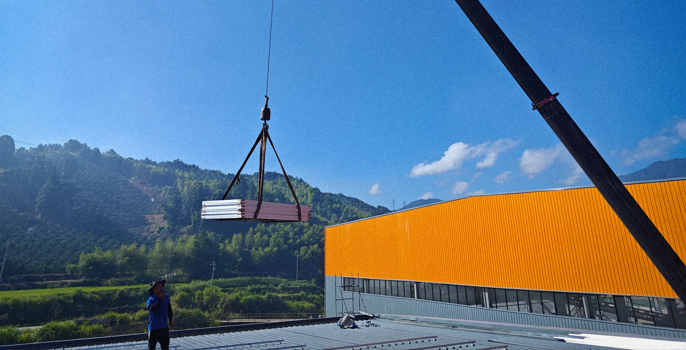

真实，与创造
我是邸涵，
我的故事

2021.10-2024.2 视觉艺术与策展专业学生

2023.1-2024.6 视觉平面与室内空间设计师

2024.10-2025.6 餐厅服务员

2025.7-至今 光伏工程项目经理
一人内容制造机
独立完成创作、技术与表达，把复杂世界拆解为可执行的作品。
真实记录 · 视频创作
我用视频记录真实生活与工作现场：设计师、体力劳动、跨国生活与学习。
不表演成功，只呈现过程，让影像有重量。
3D 与视觉建模
使用 Blender 等工具进行建模与动画实验，从空间、结构到光影，
把抽象想法变成可被理解的视觉形态。
网站与数字呈现
独立完成个人与项目网站：结构、视觉与代码同步思考。
网站不是模板堆砌，而是清晰表达自我的界面。
跨领域学习能力
从设计、视频到语言与工程现场，我习惯在陌生领域快速建立认知结构，
把“不会”变成可执行的下一步。
跨文化与语言实践
长期在意大利生活与学习，在真实交流中使用语言，而不是停留在课本。
语言对我来说，是进入世界的工具。
长期视角与自我构建
不追求速成身份，也不急于被定义。我通过持续创作与学习，
慢慢搭建属于自己的能力体系与人生路径。
在这里找到我
山长水阔，得见于斯；人海星河，幸会于此
邸涵 Dihan 邸涵 Dihan 邸涵 Dihan 邸涵 Dihan
邸涵 Dihan 邸涵 Dihan 邸涵 Dihan 邸涵 Dihan